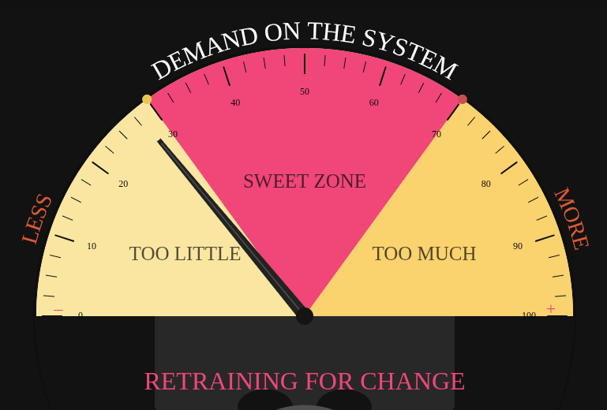
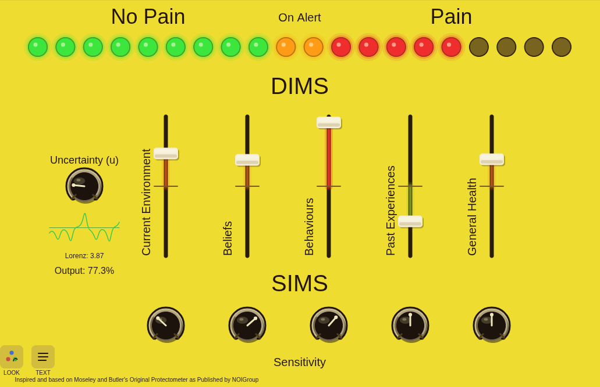
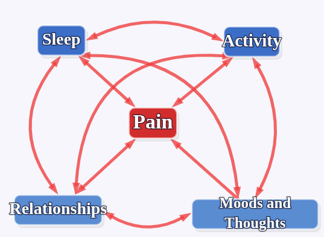

A vintage VU-style half-moon meter for visualising the therapeutic sweet zone between too little and too much demand. The arc label is editable — adapt it to any patient context in real time. Drag the boundary handles to adjust zone widths, and use the needle to show the current position.

An interactive pain sensitivity meter based on Moseley and Butler's Protectometer model. Five sliders represent contributing factors, combined with a Lorenz attractor system to model dynamic sensitivity. Supports multiple presets (Pain, Anxiety, Fatigue, PTSD) and two visual themes. All labels are editable.

A clinical network analysis tool for building personalised pain maps. Add nodes representing factors in a patient's pain journey, connect them with facilitating or inhibiting links, and use Analyse mode to explore how changes in one area ripple through the network. Includes built-in presets and save/load support.